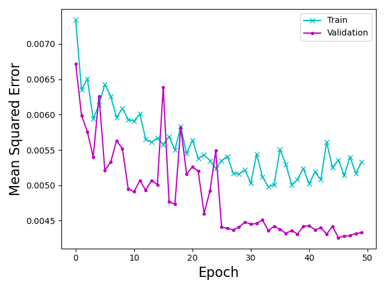

HoVer-Net training
The code of HoVer-Net taken from
git clone https://github.com/vqdang/hover_net.git
The data required to be in .mat format as having centeroind points of objects. This has been done through find_middle_point.m script written in MATLaB.
An example of annotated masks with centric points:
The training, prediction and evaluation scripts for HoverNet are as follows:
HoverNet/
├── src
│ ├── find_middle_point.m
│ ├── extract_patches.py
│ ├── run_train.py
│ ├── run_train.sh
│ ├── run_infer.py
│ ├── epoch_run.sh
│ ├── run_infer.sh
│ ├── plot_train_loss.ipynb
├── dataset
│ ├──Train
│ ├── Images
│ │ ├──*.png
│ └── Labels
│ │ ├──*.mat
│ ├──Test
│ ├── Images
│ │ ├──*.png
│ └── Labels
│ │ ├──*.mat
├── output
│ ├──epoch_out
│ ├── json
│ ├── mat
│ ├── overlay
│ ├── qupath
We have run hovernet pytorch version using the conda env provided here. and also updating as follows:
pip install torch==1.7.1+cu110 torchvision==0.8.2+cu110 torchaudio===0.7.2 -f https://download.pytorch.org/whl/torch_stable.html
extract_patches.py has been used for extracting smaller patches from train set saved as .npy numpy arrays.
For fine-tuning HoverNet model hovernet_original_consep_notype_tf2pytorch.tar pretrained model were used from pre_models directory.
We trained hovernet with 130 images (100 from BBBC and 30 from Aits training images) and validated and tested on test and validation set from here.
#!/usr/bin/env bash
#SBATCH --gpus 4
#SBATCH -A project_name
#SBATCH -t 3:00:00
#SBATCH -n 5
python run_train.py --gpu='0,1,2,3' > nuclei_results.txt
For validating models, we have run run_infer.py function for all models in every epoch.
#!/usr/bin/env bash
#SBATCH -n 3 --gpus=2
##SBATCH --gpus 10
#SBATCH -A project_name
#SBATCH -t 30:00:00
for VARIABLE in `seq 1 50`
do
python run_infer.py --model_path="logs/00/net_epoch=${VARIABLE}.tar" --model_mode='original' tile --input_dir='../dataset/Test/Images' --output_dir="output/${VARIABLE}"
done
We have plotted the training MSE loss of HoverNet for segmentation part as follows:

However, for choosing the best model among U-Net models and HoVer-Net models we have used the same evaluation scripts from U-Net repo.